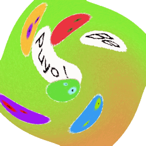
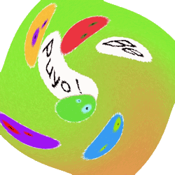

| Manuel |
| Nouveautés |
| A venir |
| Documentation |
| FAQ |
| Crédits |
| License |
| PuyoCharte |
| Internet |
BePuyo est un puzzlegame inspiré du mythique PuyoPuyo de COMPILE (racheté depuis par SEGA), distribué selon la license GPL.
Vous trouverez dans ce manuel complet, de nombreux documents, à commencer par le Manuel, qui vous apprendra à jouer à PuyoPuyo, ainsi que les touches du clavier utilisées par BePuyo!.
La section 'Nouveautés' présente les derniers apports a BePuyo
La section 'A venir' présente les fonctionnalités qui seront incluses dans les futures versions de BePuyo
La documentation développeur vous donnera toutes les informations nécéssaires pour modifier ou améliorer BePuyo, ou bien pour vous servir de son code source afin de développer d'autres logiciels (c.f. LICENSE).
Une Foire Aux Questions vous donnera des réponses aux questions les plus courrantes
La page des crédits vous dira qui a fait quoi dans BePuyo! et vous permettra de contacter la personne adéquate en cas de problè
Une copie de la GNU GPL (la license de BePuyo!) est incluse, vous devez la lire et agréer avant de jouer à BePuyo!
Enfin, une brève sélection de sites internet vous est proposées pour acquérir de plus amples informations sur PuyoPuyo.
|
|
|
Le projet BePuyo a besoin de VOUS ! Nous avons besoin de traducteurs, musiciens/bruiteurs, ... Qui que vous soyez, vous pouvez nous aider. |
 
